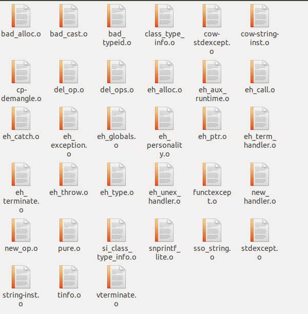

C++最令人兴奋的特性之一就是其功能完备，效率极佳的STL库，私以为这个库在部分场景下甚至比Python还要好用。
hexo-inject:begin hexo-inject:end然而不幸的是，并非所有时候我们都能使用C++语言，尤其是在编写操作系统和底层设备驱动的时候，C语言往往是我们的唯二选择（另一个是更可怕的汇编，当然你说你会机器码那我也没办法）（虽说现在Rust一类的现代系统级编程语言也很有希望成为C的替代者）。
这种时候，无法使用C++中的STL成为了一个很大的问题，程序员们往往需要自行发明（往往水平远不如STL的）轮子。
然而，由于C与C++的目标语言都是一样的，这两者应该向Kotlin和Java一样有互操作性才对。大体上来说，C++调用C比较简单，C++设计时就考虑到要尽量（但并不完全地）兼容C语言代码，但要让C语言调用C++却相对困难，不过这并非不可能之事。
本篇文章就将以vector这个最常用的容器为例，讲解如何将C++的STL代码移植到C。
一些基础知识
C/C++编译过程
首先你要知道一段C/C++代码是经过了预处理、编译1、汇编、链接这四大过程才成为了我们能运行的程序。
预处理：将宏和
#include展开编译：将预处理过的C/C++代码编译为汇编代码
汇编：将汇编代码编译为机器码
链接：将多个机器码文件（包括编译器提供的静态库
.lib和.a之类的）链接起来，成为一个可执行文件（或新的链接库，这取决于你的编译命令）。
其中前C/C++所需采用的策略不同的主要是第二个过程，即编译阶段，只要C/C++代码通过了这个阶段，在其余几个部分看来就别无二致了。
C链接性与C++链接性
我们来看这样一个最简单的空函数：
1 | void f() { |
在使用g++编译2时，我们得到的函数名称是：
1 | __Z1fv: |
这显然是把函数的参数类型返回值等等也加入了函数名，来支持overload
使用gcc编译时：
1 | _f: |
C语言没有overload，函数名就够了
由于编译到汇编时就完全没有原语言的信息了，后面链接的时候就会出现这种情形：
- 在C语言中声明并使用了函数
f，在C++语言中编写了函数的实现，分别用C/C++编译器编译到汇编后他们的名字不一样，链接链不上 - 在C++语言中声明并使用了函数
f，在C语言中编写了函数的实现，分别用C/C++编译器编译到汇编后他们的名字也不一样，链接还是链不上
为了解决这种问题，C++引入了 Language linkage 特性，来让C++编译器能用其他语言的链接性来出汇编代码。
我们只需要这样写：
1 | extern "C" void f() { |
这样在使用g++编译时就能得到_f这样的函数名了。
如果一个头文件中的函数声明要同时被C和C++使用，由于C没有上面这个特性，我们需要使用宏__cplusplus：
1 |
|
好了，知道了这些基础知识，我们就可以开始从C调用C++的STL了。
突破类型障碍
C没有泛型，这在某种程度上是一件好事（无论是C++的模版还是Java的类型擦除，都常常为人所诟病），但是我们要使用STL的时候就没有办法了，要强行弄出个泛型来（当然你不嫌累的话也可以自己针对每个要用的类型做一个版本）。
这时候我们就要用到C的弱类型特性了：
1 | void* // 谢谢你的类型系统，但这次我想自己控制这些问题 |
这是非常危险的一件事，但我们没有选择。
把类变成……
好吧，自然是结构体，但是成员函数都得暴露出来。
所以vector这个东西的声明就成了这样：
1 | // vector_port.h |
1 | // vector_port.cpp |
使用
使用很方便……吧：
1 |
|
如何编译
首先你可以将vector_port.cpp文件编译成.o文件。
1 | g++ vector_port.cpp -o vector_port.o |
然后你需要添加C++ vector所必需的支持文件，这些支持文件都可以从libstdc++.a（gcc）或libc++.a（clang）中找到。
首先找到libstdc++.a，并用ar解开：
1 | ar x libstdc++.a |
然后你将会得到C++标准库的所有.o文件，根据我精密地手动测试，在gcc下，只需要这一些就够了，其他都能删掉：

当然你懒得删也行，甚至不删，在下面编译的时候直接-lstdc++也行，甚至自己弄一份stdc++的源码来编译也行，反正静态链接会只链接你需要的部分。
将这些.o和你的vector_port.o（和其他容器的C语言移植）放在一个文件夹下，然后用ar打包：
1 | ar rc libcstl.a *.o |
接着将其复制出来，编译运行main.c即可。
1 | gcc main.c -L. -lcstl |
其他C++代码向C移植时也是同理。
1. 这里指目标语言为汇编的编译，而称整个四大过程统为编译时指的是以机器码为目标语言的编译，请注意区别。 ↩
2. 注意用命令gcc编译时，对.cpp文件仍然会采用C++链接性，要将文件扩展名改为.c才能让gcc采用C链接性 ↩
3. 我自己平常使用的其实是llvm ↩